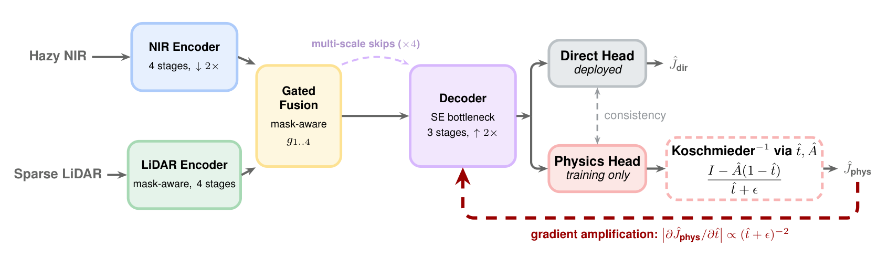

Publications
Research & Papers
Peer-reviewed work on efficient AI — physics-guided edge vision, Bayesian sparsification, quantization, and deployment-robust model compression.
2026 · First Author
PhysDNet: Physics-Driven Gradient Amplification for Real-Time Image Dehazing
NeurIPS 2026

A lightweight multimodal dehazing network for real-time edge deployment. Differentiating through a fixed physical inversion induces density-adaptive gradient amplification, an implicit curriculum that concentrates learning on the most degraded pixels without adding inference cost. On the Seeing Through Fog benchmark, PhysDNet outperforms prior methods by +1.67 dB at 5.2× lower compute, recovers 54.9% of fog-induced detection loss, and runs on fixed-function NPUs at 29–99 FPS under 4 W.
A collaboration between ETH Zurich and INSAIT, supported by the European Union's Horizon Europe programme (grant agreement 101168521).
2025
Quant-Trim in Practice: Improved Cross-Platform Low-Bit Deployment on Edge NPUs
EurIPS 2025
A training-phase method producing hardware-neutral checkpoints robust to backend and precision choices. Combines progressive fake quantization with reverse pruning to tame outlier-driven scale inflation. Agnostic to quantization schemes (symmetric/asymmetric, per-tensor/per-channel, INT8/INT4), requires no vendor-specific graph changes, and avoids per-backend retraining.
2024
Shaving Weights with Occam's Razor: Bayesian Sparsification for Neural Networks Using the Marginal Likelihood
NeurIPS 2024 (Main Track) & AABI 2024
A principled Bayesian approach to neural network sparsification using the marginal likelihood, achieving state-of-the-art compression while maintaining model performance — with applications to vision transformers and LLMs.
Academic Service
Reviewing
Scientific reviewer for top-tier machine learning conferences (ICML, NeurIPS) and journals (JAIR), covering probabilistic inference, compression, efficient AI, computer vision, and LLMs.